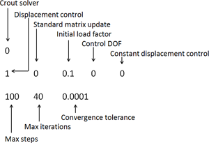
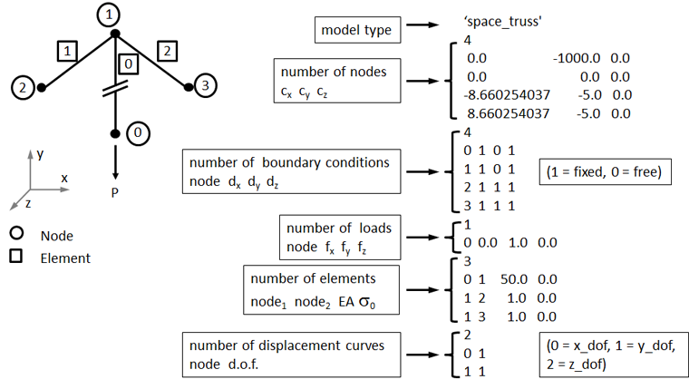
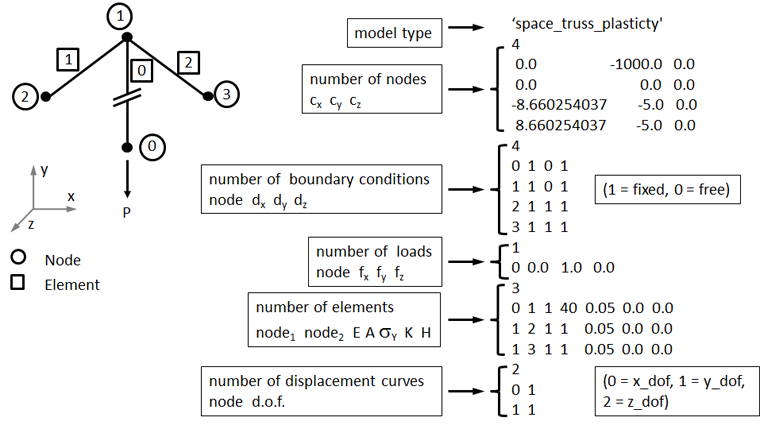
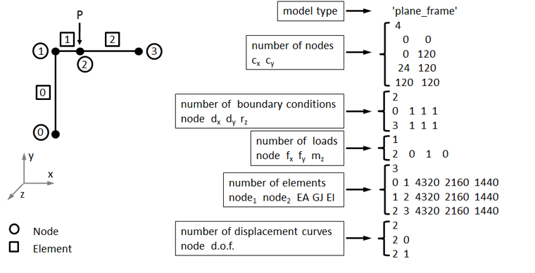

Welcome to the web-based tutorial on the NLS++ code, based on the Applied Mechanics Reviews journal paper:
Leon, S. E.,
Paulino, G. H., Pereira, A., Menezes, I. F. M., Lages, E. N. "A Unified Library of Nonlinear Solution Schemes." Applied Mechanics Reviews. Accepted.
Link to PDF
Jump to section:
NLS++ files are available for download. Included in the download is a README file detailing the compilation and linking steps. Download the compressed format of your choice and extract files.
The directory structure is shown to the right. The bin, obj, and lib directories are created after compiling the project.
Object-oriented design philosophy
The unified approach to nonlinear solution schemes for the finite element method lends itself well to an object-oriented implementation. This is due in part to the fact that the incremental-iterative process is generalized in such a way that many nonlinear solution schemes can be formulated into the N+1 dimensional space.
The NLS++ code is organized into three distinct components: Model, Control, and Linear Solver. A separate application
class creates instances of these components to execute the nonlinear analysis. The class hierarchy of NLS++ was designed in such way that the code would be executed by a simple application class, requiring minimal work from the end user.
Model classes: The model classes represent the finite element model of the system to be solved by computing and storing information associated with the system, including the tangent matrix, and internal and external load vectors. The base class/derived class paradigm is used to interface with the authors’ applications.
Linear solver class: The purpose of the linear solver class is simply to solve the linear system, i.e. Ax= b. Currently a simple direct solver (Crout solver) is implemented. The LinearSystem is extensible to accommodate different storage schemes (e.g. band, profile, sparse, etc.) and different numerical strategies (e.g. direct or iterative) for solving the system of equations.
Control classes: The Control class is the engine of the NLS++ code, in the sense that it is responsible for tracing the equilibrium path by means of the incremental-iterative procedure. Classes can be derived from the Control class to obtain the various nonlinear solution schemes. The derived class has one particular function that is not implemented in the parent class, called Lambda, which computes the load factor for each nonlinear scheme.
The NLS++ code is shown below in the form of a UML (Unified Modeling Language) diagram:
UML Diagram of NLS++
That application class of the NLS++ client requires two input files: a model file and an algorithm file. A finite element model file, for example, contains the element type, finite element mesh (i.e. nodes, elements, connectivity), boundary conditions, applied loads and displacements, and material properties. The algorithm file contains the type of nonlinear solution scheme, initial control factor, additional algorithm inputs if necessary, maximum number of steps and iterations, convergence tolerance, and type of linear solver.
- Algorithm File
- Model File 1 - Space Truss (Elastic)
- Model File 2 - Space Truss (Elasto-plastic)
- Model File 3 - Plane Frame
Algorithm file structure:
Line 1: arg1
Line 2: arg2 arg3 arg4 arg5 arg6
Line 3: arg7 arg8 arg9
Algorithm file arguments:
| arg1 - | Linear solver type (Crout = 0) |
| arg2 - | Algorithm type |
| arg3 - | Stiffness matrix update type (0 = standard, 1 = modified) |
| arg4 - | Initial load factor |
| arg5 - | Algorithm parameter 1 |
| arg6 - | Algorithm parameter 2 |
| arg7 - | Maximum number of steps |
| arg8 - | Maximum number of iterations per step |
| arg9 - | Tolerance for convergence |

Summary of algorithm input parameters:
| Name | Algorithm Type | Algorithm Parameter 1 | Algorithm Parameter 2 |
| Load Control | 0 |
none | none |
| Displacement Control | 1 |
D.O.F. of controlled equation | Type (0 = constant, 1 = variable) |
| Arc Length Control | 2 |
Type (0 = constant, 1 = variable) | none |
| Work Control | 3 |
none | none |
| Generalized Disp. Control | 4 |
none | none |
| Orthogonal Residual | 5 |
Initial incremental scale factor | none |



The instructions below explain how to run NLS++ in Visual Studio and run the code.
1. Open the tnls.vcproj file, which is located in tests/prj/vc7/. This opens a solution with two projects: tnls and nls. The source and header files for each project are already loaded. Set the build order such that nls is built first followed by tnls.
Note: The nls.prj file holds the source and header files for the NLS library. The tnls.prj is an application of nls.prj, meaning that it depends nls.prj and contains the executable main.cpp file.
2. Run NLS++ using either the command prompt or Visual Studio.
Note: Immediately after declaring variables, main.cpp reads the name of the input files. The input files must be in the working directory.
To use the command prompt continue with step 2, otherwise to use Visual Studio skip to step 3(a).
Open a command prompt, navigate to your working directory and type "tnls.exe" followed by the model input filename and the algorithm filename.
3(a). Right click on the tnls project, select Properties. In the Properties Pages dialogue box navigate to Debugging on the menu on the left hand side under Configuration Properties. Type the name of the input files in the Command Arguments box, starting with the model file then the algorithm file. Click Ok.
3(b). Click the Run button on the Standard toolbar.
4. View results
The following examples are run using two input files: one algorithm file containing the input parameters for the specific nonlinear solution scheme adopted for the particular problem, and the model file which contains node list, connectivity, material, boundary conditions, and output requests. To read more about the input files see the Input file formats section. Plotting was performed used a simple matlab code.
- Functions
- Von Mises Truss
- Von Mises Truss (w/ plasticity)
- 12 Bar Truss
- Lee Frame
Functions are readily implemented into NLS++ and serve as simple ways to test the nonlinear solution schemes. Two functions are show below:
One-dimensional function files (zip format)
Two-dimensional function files (zip format)
The Von Mises Truss is a two-degree of freedom system consisting of two nonlinear prismatic bar (truss) elements loaded indirectly through a spring. Large displacements and rotations constitute the geometric nonlinearity, but the constitutive relation is the linear Hooke’s law, thus material nonlinearity is not considered. The behavior of this structure depends strongly on the stiffness of the spring, C, as snap-back behavior will only occur if it is below the critical value.
Elastic VMT with snap-back files (zip format)
Elastic VMT without snap-back files (zip format)
The Von Mises Truss is a two-degree of freedom system consisting of two nonlinear prismatic bar (truss) elements loaded indirectly through a spring. Large displacements and rotations constitute the geometric nonlinearity, and material nonlinearity is considered by adopting an elastic, perfectly-plastic constitutive model.
The spring stiffness and initial flow stress can be varied to achieve different different structural responses, as shown in the figure to the right.
Click here for details on the derivation of the analytical solution.
Elasto-plastic VMT files (zip format)
This example consists of a 12-bar truss structure which features highly nonlinear
behavior: the load changes direction eight times and the
structure experiences several very large changes in stiffness
through the load history. Geometric nonlinearity is considered, however the constitutive
relationship is linear, thus material nonlinearity is
not. Double symmetry
is considered and, therefore, the deformations of the
structure can be described by three displacement components
(u1, u2, and u3).
12 bart truss schematic and results. Markers indicate the last converged equilibrium point achieved by each method.
Deformation of the Lee Frame is characterized by large rigid body displacements and rotations resulting in instability. The behavior is highly nonlinear with two load limit points and snap-back behavior (i.e. displacement limit point).
Output files from NLS++ were plotted with simple MATLAB codes, available here.
Thank you for using NLS++!